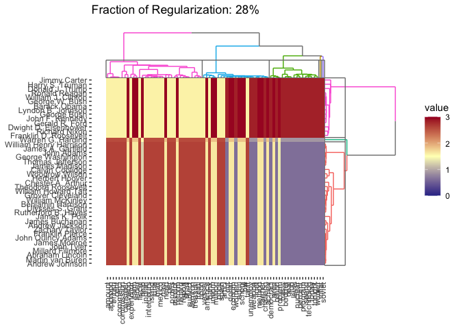
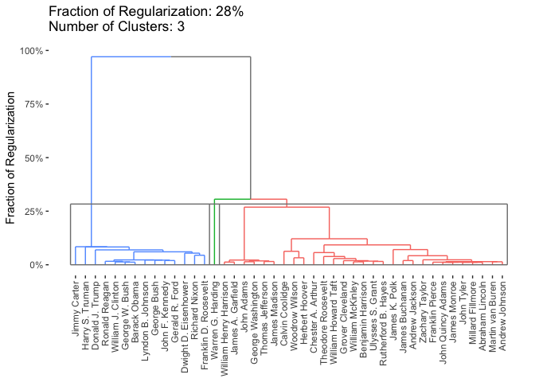
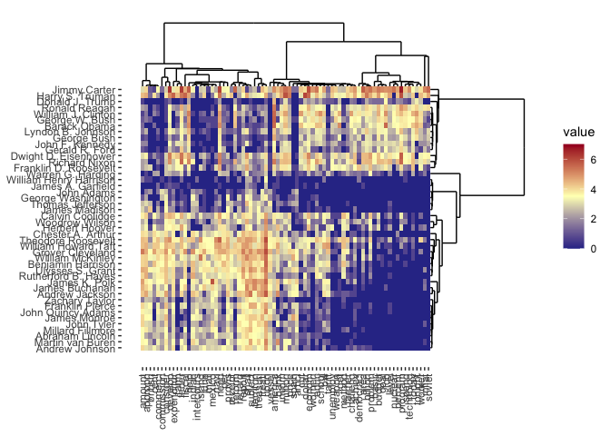

clustRviz aims to enable fast computation and easy visualization of Convex Clustering solution paths.
Installation
You can install clustRviz from github with:
# install.packages("devtools") devtools::install_github("DataSlingers/clustRviz")
Note that RcppEigen (which clustRviz internally) triggers many compiler warnings (which cannot be suppressed per CRAN policies). Many of these warnings can be locally suppressed by adding the line CXX11FLAGS+=-Wno-ignored-attributes to your ~/.R/Makevars file. To install an R package from source, you will need suitable development tools installed including a C++ compiler and potentially a Fortran runtime. Details about these toolchains are available on CRAN for Windows and macOS.
Quick-Start
There are two main entry points to the clustRviz package, the CARP and CBASS functions, which perform convex clustering and convex biclustering respectively. We demonstrate the use of these two functions on a text minining data set, presidential_speech, which measures how often the 44 U.S. presidents used certain words in their public addresses.
library(clustRviz) #> Registered S3 method overwritten by 'seriation': #> method from #> reorder.hclust gclus data(presidential_speech) presidential_speech[1:6, 1:6] #> amount appropri british cent commerci commission #> Abraham Lincoln 3.433987 2.397895 1.791759 2.564949 2.708050 2.079442 #> Andrew Jackson 4.248495 4.663439 2.995732 1.945910 3.828641 3.218876 #> Andrew Johnson 4.025352 3.091042 2.833213 3.332205 2.772589 2.079442 #> Barack Obama 1.386294 0.000000 0.000000 1.386294 0.000000 0.000000 #> Benjamin Harrison 4.060443 4.174387 2.302585 4.304065 3.663562 3.465736 #> Calvin Coolidge 3.713572 4.094345 1.386294 3.555348 2.639057 1.609438
Clustering
We begin by clustering this data set, grouping the rows (presidents) into clusters:
carp_fit <- CARP(presidential_speech) #> Pre-computing weights and edge sets #> Computing Convex Clustering [CARP] Path #> Post-processing print(carp_fit) #> CARP Fit Summary #> ==================== #> #> Algorithm: CARP (t = 1.05) #> Fit Time: 0.142 secs #> Total Time: 0.636 secs #> #> Number of Observations: 44 #> Number of Variables: 75 #> #> Pre-processing options: #> - Columnwise centering: TRUE #> - Columnwise scaling: FALSE #> #> Weights: #> - Source: Radial Basis Function Kernel Weights #> - Distance Metric: Euclidean #> - Scale parameter (phi): 0.01 [Data-Driven] #> - Sparsified: 4 Nearest Neighbors [Data-Driven]
The algorithmic regularization technique employed by CARP makes computation of the whole solution path almost immediate.
We can examine the result of CARP graphically. We begin with a standard dendrogram, with three clusters highlighted:
plot(carp_fit, type = "dendrogram", k = 3)
Examing the dendrogram, we see two clear clusters, consisting of pre-WWII and post-WWII presidents and Warren G. Harding as a possible outlier. Harding is generally considered one of the worst US presidents of all time, so this is perhaps not too surprising.
A more interesting visualization is the dynamic path visualization, whereby we can watch the clusters fuse as the regularization level is increased:
plot(carp_fit, type = "path", dynamic = TRUE)
BiClustering
The use of CBASS for convex biclustering is similar, and we demonstrate it here with a cluster heatmap, with the regularization set to give 3 observation clusters:
cbass_fit <- CBASS(presidential_speech) #> Pre-computing column weights and edge sets #> Pre-computing row weights and edge sets #> Computing Convex Bi-Clustering [CBASS] Path #> Post-processing rows #> Post-processing columns plot(cbass_fit, k.row = 3)

By default, plotting the result of CBASS gives the traditional cluster heatmap, but we can also get the row or column dendrograms as well:
plot(cbass_fit, type = "row.dendrogram", k.row = 3)

By default, if a regularization level is specified, all plotting functions in clustRviz will plot the clustered data. If the regularization level is not specified, the raw data will be plotted instead:
plot(cbass_fit, type = "heatmap")

More details about the use and mathematical formulation of CARP and CBASS may be found in the package documentation.